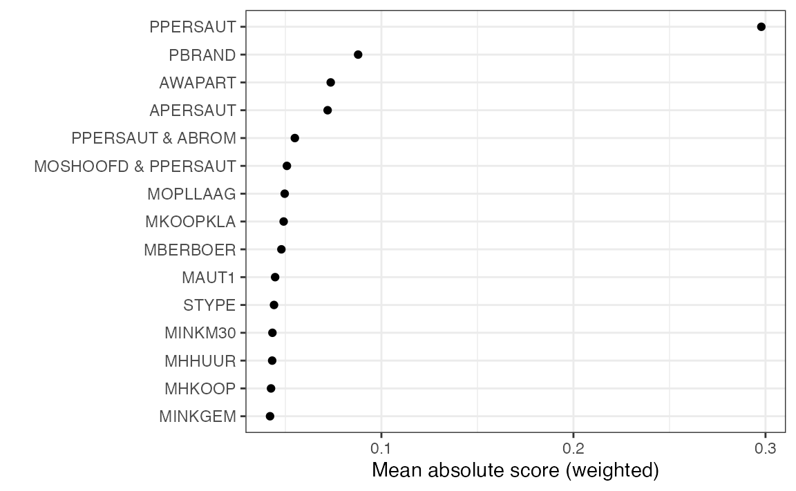
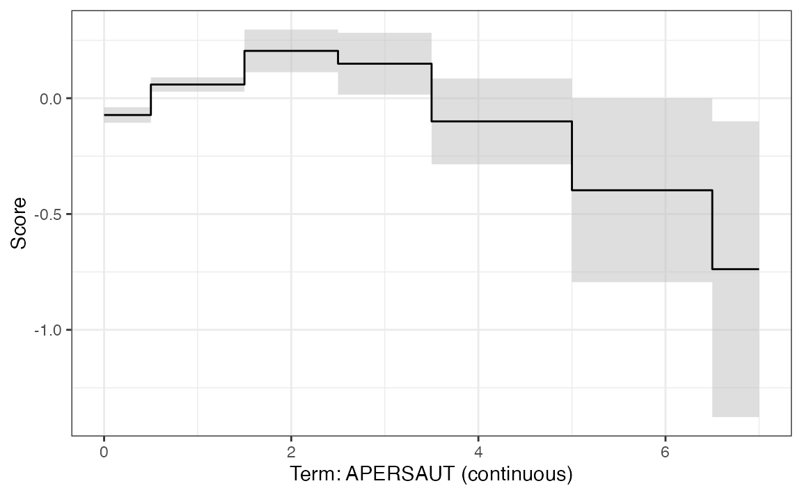
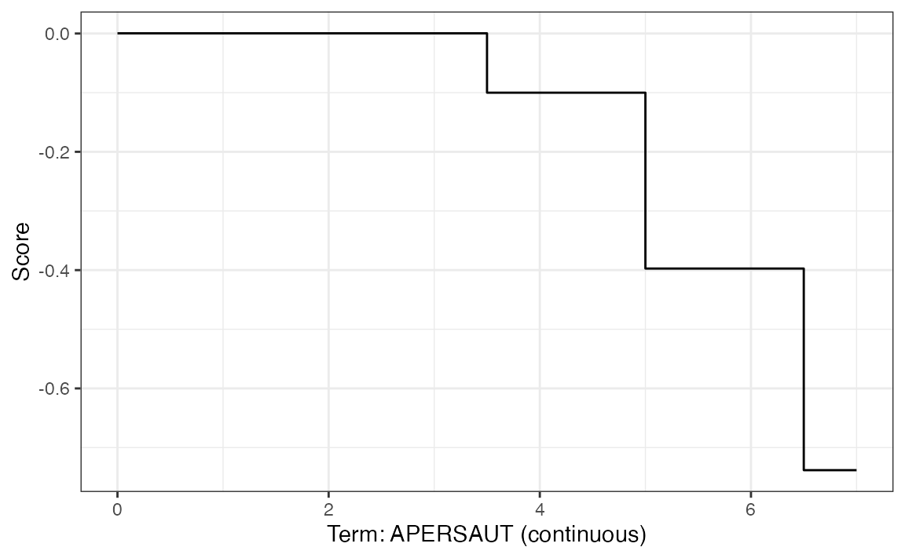
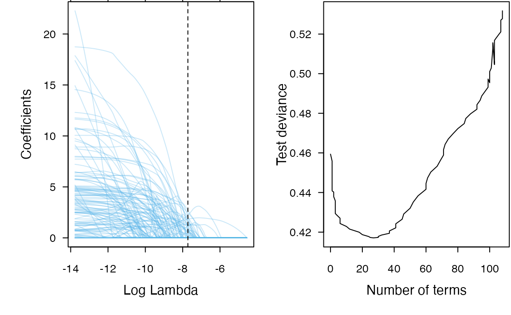
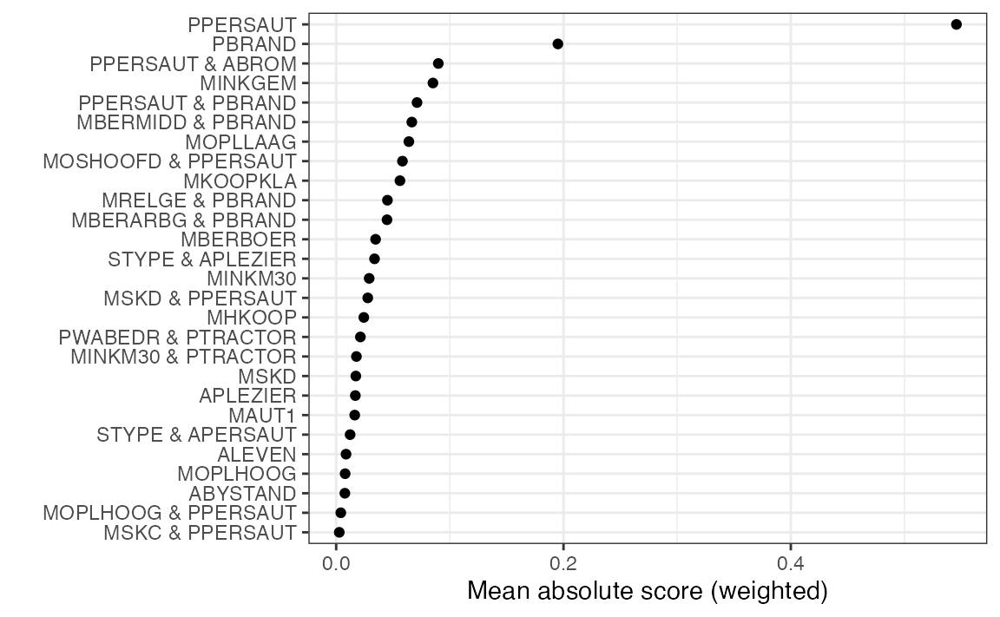

Advanced usage
Brandon M. Greenwell
advanced.RmdIn this article, we’ll explore several advanced uses of the ebm package through a binary classification example. In particular, we’ll be using data from the CoIL 2000 Challenge, which are available in the R package kernlab. The data set consists of \(N = 9822\) customer records containing 86 variables, including product usage data and socio-demographic data derived from zip area codes. The goal of the challenge was to be able to answer the following question: “Can you predict who would be interested in buying a caravan insurance policy and give an explanation of why?” Hence, being able to explain your model’s predictions was key to being successful in this challenge.
We’ll start by loading the data fitting a default EBM classifier:
library(ebm)
library(ggplot2)
theme_set(theme_bw())
# Load in the data and split into train/test using predefined test set indicator
data("ticdata", package = "kernlab") # see `?kernlab::ticdata` for details
ticdata$CARAVAN <- ifelse(ticdata$CARAVAN == "insurance", 1, 0)
tictrn <- ticdata[1:5000, ]
tictst <- ticdata[-(1:5000), ]
# Build a default EBM
fit <- ebm(CARAVAN ~ ., data = tictrn)
plot(fit, n_features = 15) # plot top 15 features based on mean absolute score
Monotonic constraints
While PPERSAUT (the contribution level for car policies)
is the top predictive feature, it’s also categorical and so we cannot
force monotonicity here. Technically, PPERSAUT is ordinal
so it would not be unreasonable to recode it as an integer or similar
and refit the model (tree-based models tend to only differentiate
between ordered and nominal features). Instead, we’ll focus on the
number of car policies APERSAUT.
plot(fit, term = "APERSAUT")
Here we can see that the relationship is mostly decreasing, which
seems logical. The more car policies they already own, the less likely
they are to purchase another. Hence, it may make sense to force
decreasing monotonicity here. While we can force monotonic constraints
via the monotone_constraints argument in the call to
ebm(), the original authors generally recommend forcing
monotonicity by post-processing the graphs instead using isotonic
regression. This can be done by calling the $monotonize()
method on the fitted EBM object. This is the recommended approach as it
prevents the model from compensating for the monotonicity constraints by
learning non-monotonic effects in other highly-correlated features.
In the example below, we post-process the graph for
APERDAUT to force negative monotonicity
(increasing = FALSE) using isotonic regression. Notice this
does change the term contributions for APERSAUT in the
fitted model. Additionally, we lose any uncertainty associated with the
feature from the outer bagging in the original model.
fit$monotonize("APERSAUT", increasing = FALSE)
#> ExplainableBoostingClassifier(early_stopping_tolerance=0,
#> interaction_smoothing_rounds=100,
#> learning_rate=0.04, max_leaves=2, min_hessian=0.0,
#> smoothing_rounds=500)
plot(fit, term = "APERSAUT")
While the ebm package does not expose 100% of the functionality available in Python, this example shows that you can pretty much do anything you need by interacting directly with the underlying Python objects (the magic happens through reticulate). For example, to reproduce the original HTML-based visualization, which will be displayed in a browser, you can do the following:
idx <- as.integer(which(fit$term_names_ == "APERSAUT") - 1L)
plt <- fit$explain_global()$visualize(idx)
plt$show() # should open in a browser; can also call `plt$write_html("<path/to/file.html>")`Details aside, you can access the data to recreate the plot (like the
plot() method does), by coercing the internal Python plotly
object to an ordered dictionary which reticulate will
automatically convert to a list. For instance, the following snippet of
code extracts the main data used in generating the previous plot.
plt$to_ordered_dict()$data[[1L]]
#> $fill
#> [1] "none"
#>
#> $fillcolor
#> [1] "rgba(68, 68, 68, 0.15)"
#>
#> $line
#> $line$color
#> [1] "rgb(31, 119, 180)"
#>
#> $line$shape
#> [1] "hv"
#>
#>
#> $mode
#> [1] "lines"
#>
#> $name
#> [1] "Main"
#>
#> $type
#> [1] "scatter"
#>
#> $x
#> [1] 0.0 0.5 1.5 2.5 3.5 5.0 6.5 7.0
#>
#> $xaxis
#> [1] "x"
#>
#> $y
#> [1] 0.0003276259 0.0003276259 0.0003276259 0.0003276259 -0.1000587645
#> [6] -0.3973416956 -0.7382006285 -0.7382006285
#>
#> $yaxis
#> [1] "y"Model compression via the LASSO
Compared to “black-box” models, like random forests and deep neural networks, EBMs are considered “glass-box” models that can be competitively accurate while also maintaining a higher degree of transparency and explainability. However, EBMs become readily less transparent and harder to interpret in high-dimensional settings with many predictor variables; they also become more difficult to use in production due to increases in scoring time. We propose a simple solution based on the least absolute shrinkage and selection operator (LASSO) that can help introduce sparsity by reweighting the individual model terms and removing the less relevant ones, thereby allowing these models to maintain their transparency and relatively fast scoring times in higher-dimensional settings. In short, post-processing a fitted EBM with many (i.e., possibly hundreds or thousands) of terms using the LASSO can help reduce the model’s complexity and drastically improve scoring time. For methodological (and software) details, see the associated paper on “Explainable Boosting Machines with Sparsity—Maintaining Explainability in High-Dimensional Settings.”
We’ll illustrate the basic idea using the previous model, which contains 1 total terms comprised of the main effects, pairwise interactions, and an intercept.
# Rebuild the previous EBM without monotonicity
fit <- ebm(CARAVAN ~ ., data = tictrn)
fit$term_names_ # does not include the intercept
#> [1] "STYPE" "MAANTHUI" "MGEMOMV"
#> [4] "MGEMLEEF" "MOSHOOFD" "MGODRK"
#> [7] "MGODPR" "MGODOV" "MGODGE"
#> [10] "MRELGE" "MRELSA" "MRELOV"
#> [13] "MFALLEEN" "MFGEKIND" "MFWEKIND"
#> [16] "MOPLHOOG" "MOPLMIDD" "MOPLLAAG"
#> [19] "MBERHOOG" "MBERZELF" "MBERBOER"
#> [22] "MBERMIDD" "MBERARBG" "MBERARBO"
#> [25] "MSKA" "MSKB1" "MSKB2"
#> [28] "MSKC" "MSKD" "MHHUUR"
#> [31] "MHKOOP" "MAUT1" "MAUT2"
#> [34] "MAUT0" "MZFONDS" "MZPART"
#> [37] "MINKM30" "MINK3045" "MINK4575"
#> [40] "MINK7512" "MINK123M" "MINKGEM"
#> [43] "MKOOPKLA" "PWAPART" "PWABEDR"
#> [46] "PWALAND" "PPERSAUT" "PBESAUT"
#> [49] "PMOTSCO" "AAUT" "PAANHANG"
#> [52] "PTRACTOR" "PWERKT" "PBROM"
#> [55] "PLEVEN" "PPERSONG" "PGEZONG"
#> [58] "PWAOREG" "PBRAND" "PZEILPL"
#> [61] "PPLEZIER" "PFIETS" "PINBOED"
#> [64] "PBYSTAND" "AWAPART" "AWABEDR"
#> [67] "AWALAND" "APERSAUT" "ABESAUT"
#> [70] "AMOTSCO" "AVRAAUT" "AAANHANG"
#> [73] "ATRACTOR" "AWERKT" "ABROM"
#> [76] "ALEVEN" "APERSONG" "AGEZONG"
#> [79] "AWAOREG" "ABRAND" "AZEILPL"
#> [82] "APLEZIER" "AFIETS" "AINBOED"
#> [85] "ABYSTAND" "STYPE & PPERSAUT" "STYPE & PPLEZIER"
#> [88] "STYPE & APERSAUT" "STYPE & APLEZIER" "MAANTHUI & PPERSAUT"
#> [91] "MGEMOMV & PPERSAUT" "MGEMLEEF & PPERSAUT" "MOSHOOFD & PPERSAUT"
#> [94] "MGODRK & PPERSAUT" "MGODPR & PPERSAUT" "MGODOV & PPERSAUT"
#> [97] "MGODGE & PPERSAUT" "MRELGE & PPERSAUT" "MRELGE & PBRAND"
#> [100] "MRELSA & PPERSAUT" "MRELOV & PPERSAUT" "MFALLEEN & PPERSAUT"
#> [103] "MFGEKIND & PPERSAUT" "MFWEKIND & PPERSAUT" "MOPLHOOG & PPERSAUT"
#> [106] "MOPLMIDD & PPERSAUT" "MOPLLAAG & PPERSAUT" "MBERHOOG & PPERSAUT"
#> [109] "MBERBOER & PPERSAUT" "MBERMIDD & PPERSAUT" "MBERMIDD & PBRAND"
#> [112] "MBERARBG & PPERSAUT" "MBERARBG & PBRAND" "MBERARBO & PPERSAUT"
#> [115] "MSKA & PPERSAUT" "MSKB1 & PPERSAUT" "MSKB1 & PBRAND"
#> [118] "MSKB2 & PPERSAUT" "MSKC & PPERSAUT" "MSKD & PPERSAUT"
#> [121] "MHHUUR & PPERSAUT" "MHHUUR & PBRAND" "MHKOOP & PPERSAUT"
#> [124] "MHKOOP & PBRAND" "MAUT1 & PPERSAUT" "MAUT2 & PPERSAUT"
#> [127] "MAUT0 & PPERSAUT" "MZFONDS & PPERSAUT" "MZPART & PPERSAUT"
#> [130] "MINKM30 & PPERSAUT" "MINKM30 & PTRACTOR" "MINK3045 & PPERSAUT"
#> [133] "MINK4575 & PPERSAUT" "MINK7512 & PPERSAUT" "MINK123M & PPERSAUT"
#> [136] "MINKGEM & PPERSAUT" "MKOOPKLA & PPERSAUT" "MKOOPKLA & PPLEZIER"
#> [139] "MKOOPKLA & APLEZIER" "PWAPART & PPERSAUT" "PWABEDR & PTRACTOR"
#> [142] "PWALAND & PPERSAUT" "PPERSAUT & PMOTSCO" "PPERSAUT & PAANHANG"
#> [145] "PPERSAUT & PTRACTOR" "PPERSAUT & PBROM" "PPERSAUT & PLEVEN"
#> [148] "PPERSAUT & PGEZONG" "PPERSAUT & PBRAND" "PPERSAUT & PPLEZIER"
#> [151] "PPERSAUT & PFIETS" "PPERSAUT & PINBOED" "PPERSAUT & PBYSTAND"
#> [154] "PPERSAUT & AAANHANG" "PPERSAUT & ABROM" "PPERSAUT & ALEVEN"
#> [157] "PPERSAUT & AGEZONG" "PPERSAUT & ABRAND" "PPERSAUT & APLEZIER"
#> [160] "PPERSAUT & AFIETS" "PBROM & APERSAUT" "APERSAUT & ABROM"To make things easier downstream, lets go ahead partition the data by separating the features from the response:
X_trn <- subset(tictrn, select = -CARAVAN) # feature columns
X_tst <- subset(tictst, select = -CARAVAN)
y_trn <- tictrn$CARAVAN
y_tst <- tictst$CARAVANIn the next chunk, we’ll construct a data matrix of the individual
term contributions for both the train and test sets. That is, each is a
matrix who’s \(i\)-th column is given
by the \(i\)-th terms contribution to
the model’s output (before applying any link function, so it’ll be on
the logit scale in this example). In particular, note that
rowSum(terms_trn) + fit$intercept_ is equivalent to calling
predict(fit, newdata = X_trn). These data matrices will be
used as input to the LASSO shortly after.
terms_trn <- predict(fit, newdata = X_trn, type = "terms")
terms_tst <- predict(fit, newdata = X_tst, type = "terms")
colnames(terms_trn) <- colnames(terms_tst) <- fit$term_names_
# Sanity check
head(cbind(
rowSums(terms_trn) + c(fit$intercept_),
predict(fit, newdata = tictrn, type = "link") # additive on link scale
))
#> [,1] [,2]
#> [1,] -2.436647 -2.436647
#> [2,] -3.750533 -3.750533
#> [3,] -2.470428 -2.470428
#> [4,] -2.345187 -2.345187
#> [5,] -6.122288 -6.122288
#> [6,] -5.021766 -5.021766Next, we use the glmnet package to fit the LASSO path to the new data set comprised of the individual term contributions. We then assess performance using the associated test set and collect the results.
library(glmnet)
# Fit the LASSO regularization path using the term contributions as inputs
ebm_lasso <- glmnet(
x = terms_trn, # individual term contributions/scores
y = y_trn, # original response variable
lower.limits = 0, # coefficients should be strictly positive
standardize = FALSE, # no need to standardize
family = "binomial" # logistic regression
)
# Assess performance of fit using an independent test set
perf <- assess.glmnet(
object = ebm_lasso, # fitted LASSO model
newx = terms_tst, # test set contributions
newy = y_tst, # same response variable (test set)
family = "binomial" # for logit link (i.e., logistic regression)
)
perf <- do.call(cbind, args = perf) # bind results into matrix
# Data frame of results (one row for each value of lambda)
ebm_lasso_res <- as.data.frame(cbind(
"num_terms" = ebm_lasso$df, # number of non-zero coefficients for each lambda
perf, # performance metrics (i.e., deviance, auc, etc.)
"lambda" = ebm_lasso$lambda
))
# Sort in ascending order of number of terms
head(ebm_lasso_res <- ebm_lasso_res[order(ebm_lasso_res$num_terms), ])
#> num_terms deviance class auc mse mae lambda
#> s0 0 0.4593780 0.06097055 0.5000000 0.1145195 0.2244984 0.010485360
#> s1 1 0.4558854 0.06097055 0.6585024 0.1141333 0.2241294 0.009553870
#> s2 1 0.4530105 0.06097055 0.6585024 0.1138124 0.2237924 0.008705130
#> s3 1 0.4506381 0.06097055 0.6585024 0.1135459 0.2234846 0.007931790
#> s4 1 0.4486776 0.06097055 0.6585024 0.1133243 0.2232036 0.007227152
#> s5 1 0.4470567 0.06097055 0.6585024 0.1131402 0.2229470 0.006585112Next, we’ll compute the lambda value associated with the
smallest deviance (or half the log-loss):
(lambda <- ebm_lasso_res[which.min(ebm_lasso_res$deviance), "lambda"])
#> [1] 0.0004434513Here are the results for the compressed EBM corresponding to this
value of lambda:
{rebm-ticdata-lasso-results} ebm_lasso_results[which.min(ebm_lasso_results$deviance), ]
Finally, we can plot the results! On the left, we show the LASSO path and on the right we show the test deviance as a function of the number of terms in the compressed model.
par(mfrow = c(1, 2), mar = c(4, 4, 0.1, 0.1), cex.lab = 0.95,
cex.axis = 0.8, mgp = c(2, 0.7, 0), tcl = -0.3, las = 1)
palette("Okabe-Ito")
# Plot results
plot(ebm_lasso, xvar = "lambda", col = adjustcolor(3, alpha.f = 0.3))
abline(v = log(lambda), lty = 2, col = 1)
plot(ebm_lasso_res[, c("num_terms", "deviance")], type = "l", las = 1,
xlab = "Number of terms", ylab = "Test deviance")
palette("default")Lastly, we can call the $scale() and
$sweep() methods to reweight and purge any unused terms
from the model:
weights <- coef(ebm_lasso, s = lambda)
weights <- setNames(as.numeric(weights), nm = rownames(weights))
for (i in seq_along(weights[-1L])) {
idx <- as.integer(i - 1L) # Sigh, Python indexing starts at 0
print(paste0("Replcating term ", fit$term_names_[i], " with ", names(weights)[i + 1]))
fit$scale(idx, factor = weights[i + 1])
}
#> [1] "Replcating term STYPE with STYPE"
#> [1] "Replcating term MAANTHUI with MAANTHUI"
#> [1] "Replcating term MGEMOMV with MGEMOMV"
#> [1] "Replcating term MGEMLEEF with MGEMLEEF"
#> [1] "Replcating term MOSHOOFD with MOSHOOFD"
#> [1] "Replcating term MGODRK with MGODRK"
#> [1] "Replcating term MGODPR with MGODPR"
#> [1] "Replcating term MGODOV with MGODOV"
#> [1] "Replcating term MGODGE with MGODGE"
#> [1] "Replcating term MRELGE with MRELGE"
#> [1] "Replcating term MRELSA with MRELSA"
#> [1] "Replcating term MRELOV with MRELOV"
#> [1] "Replcating term MFALLEEN with MFALLEEN"
#> [1] "Replcating term MFGEKIND with MFGEKIND"
#> [1] "Replcating term MFWEKIND with MFWEKIND"
#> [1] "Replcating term MOPLHOOG with MOPLHOOG"
#> [1] "Replcating term MOPLMIDD with MOPLMIDD"
#> [1] "Replcating term MOPLLAAG with MOPLLAAG"
#> [1] "Replcating term MBERHOOG with MBERHOOG"
#> [1] "Replcating term MBERZELF with MBERZELF"
#> [1] "Replcating term MBERBOER with MBERBOER"
#> [1] "Replcating term MBERMIDD with MBERMIDD"
#> [1] "Replcating term MBERARBG with MBERARBG"
#> [1] "Replcating term MBERARBO with MBERARBO"
#> [1] "Replcating term MSKA with MSKA"
#> [1] "Replcating term MSKB1 with MSKB1"
#> [1] "Replcating term MSKB2 with MSKB2"
#> [1] "Replcating term MSKC with MSKC"
#> [1] "Replcating term MSKD with MSKD"
#> [1] "Replcating term MHHUUR with MHHUUR"
#> [1] "Replcating term MHKOOP with MHKOOP"
#> [1] "Replcating term MAUT1 with MAUT1"
#> [1] "Replcating term MAUT2 with MAUT2"
#> [1] "Replcating term MAUT0 with MAUT0"
#> [1] "Replcating term MZFONDS with MZFONDS"
#> [1] "Replcating term MZPART with MZPART"
#> [1] "Replcating term MINKM30 with MINKM30"
#> [1] "Replcating term MINK3045 with MINK3045"
#> [1] "Replcating term MINK4575 with MINK4575"
#> [1] "Replcating term MINK7512 with MINK7512"
#> [1] "Replcating term MINK123M with MINK123M"
#> [1] "Replcating term MINKGEM with MINKGEM"
#> [1] "Replcating term MKOOPKLA with MKOOPKLA"
#> [1] "Replcating term PWAPART with PWAPART"
#> [1] "Replcating term PWABEDR with PWABEDR"
#> [1] "Replcating term PWALAND with PWALAND"
#> [1] "Replcating term PPERSAUT with PPERSAUT"
#> [1] "Replcating term PBESAUT with PBESAUT"
#> [1] "Replcating term PMOTSCO with PMOTSCO"
#> [1] "Replcating term AAUT with AAUT"
#> [1] "Replcating term PAANHANG with PAANHANG"
#> [1] "Replcating term PTRACTOR with PTRACTOR"
#> [1] "Replcating term PWERKT with PWERKT"
#> [1] "Replcating term PBROM with PBROM"
#> [1] "Replcating term PLEVEN with PLEVEN"
#> [1] "Replcating term PPERSONG with PPERSONG"
#> [1] "Replcating term PGEZONG with PGEZONG"
#> [1] "Replcating term PWAOREG with PWAOREG"
#> [1] "Replcating term PBRAND with PBRAND"
#> [1] "Replcating term PZEILPL with PZEILPL"
#> [1] "Replcating term PPLEZIER with PPLEZIER"
#> [1] "Replcating term PFIETS with PFIETS"
#> [1] "Replcating term PINBOED with PINBOED"
#> [1] "Replcating term PBYSTAND with PBYSTAND"
#> [1] "Replcating term AWAPART with AWAPART"
#> [1] "Replcating term AWABEDR with AWABEDR"
#> [1] "Replcating term AWALAND with AWALAND"
#> [1] "Replcating term APERSAUT with APERSAUT"
#> [1] "Replcating term ABESAUT with ABESAUT"
#> [1] "Replcating term AMOTSCO with AMOTSCO"
#> [1] "Replcating term AVRAAUT with AVRAAUT"
#> [1] "Replcating term AAANHANG with AAANHANG"
#> [1] "Replcating term ATRACTOR with ATRACTOR"
#> [1] "Replcating term AWERKT with AWERKT"
#> [1] "Replcating term ABROM with ABROM"
#> [1] "Replcating term ALEVEN with ALEVEN"
#> [1] "Replcating term APERSONG with APERSONG"
#> [1] "Replcating term AGEZONG with AGEZONG"
#> [1] "Replcating term AWAOREG with AWAOREG"
#> [1] "Replcating term ABRAND with ABRAND"
#> [1] "Replcating term AZEILPL with AZEILPL"
#> [1] "Replcating term APLEZIER with APLEZIER"
#> [1] "Replcating term AFIETS with AFIETS"
#> [1] "Replcating term AINBOED with AINBOED"
#> [1] "Replcating term ABYSTAND with ABYSTAND"
#> [1] "Replcating term STYPE & PPERSAUT with STYPE & PPERSAUT"
#> [1] "Replcating term STYPE & PPLEZIER with STYPE & PPLEZIER"
#> [1] "Replcating term STYPE & APERSAUT with STYPE & APERSAUT"
#> [1] "Replcating term STYPE & APLEZIER with STYPE & APLEZIER"
#> [1] "Replcating term MAANTHUI & PPERSAUT with MAANTHUI & PPERSAUT"
#> [1] "Replcating term MGEMOMV & PPERSAUT with MGEMOMV & PPERSAUT"
#> [1] "Replcating term MGEMLEEF & PPERSAUT with MGEMLEEF & PPERSAUT"
#> [1] "Replcating term MOSHOOFD & PPERSAUT with MOSHOOFD & PPERSAUT"
#> [1] "Replcating term MGODRK & PPERSAUT with MGODRK & PPERSAUT"
#> [1] "Replcating term MGODPR & PPERSAUT with MGODPR & PPERSAUT"
#> [1] "Replcating term MGODOV & PPERSAUT with MGODOV & PPERSAUT"
#> [1] "Replcating term MGODGE & PPERSAUT with MGODGE & PPERSAUT"
#> [1] "Replcating term MRELGE & PPERSAUT with MRELGE & PPERSAUT"
#> [1] "Replcating term MRELGE & PBRAND with MRELGE & PBRAND"
#> [1] "Replcating term MRELSA & PPERSAUT with MRELSA & PPERSAUT"
#> [1] "Replcating term MRELOV & PPERSAUT with MRELOV & PPERSAUT"
#> [1] "Replcating term MFALLEEN & PPERSAUT with MFALLEEN & PPERSAUT"
#> [1] "Replcating term MFGEKIND & PPERSAUT with MFGEKIND & PPERSAUT"
#> [1] "Replcating term MFWEKIND & PPERSAUT with MFWEKIND & PPERSAUT"
#> [1] "Replcating term MOPLHOOG & PPERSAUT with MOPLHOOG & PPERSAUT"
#> [1] "Replcating term MOPLMIDD & PPERSAUT with MOPLMIDD & PPERSAUT"
#> [1] "Replcating term MOPLLAAG & PPERSAUT with MOPLLAAG & PPERSAUT"
#> [1] "Replcating term MBERHOOG & PPERSAUT with MBERHOOG & PPERSAUT"
#> [1] "Replcating term MBERBOER & PPERSAUT with MBERBOER & PPERSAUT"
#> [1] "Replcating term MBERMIDD & PPERSAUT with MBERMIDD & PPERSAUT"
#> [1] "Replcating term MBERMIDD & PBRAND with MBERMIDD & PBRAND"
#> [1] "Replcating term MBERARBG & PPERSAUT with MBERARBG & PPERSAUT"
#> [1] "Replcating term MBERARBG & PBRAND with MBERARBG & PBRAND"
#> [1] "Replcating term MBERARBO & PPERSAUT with MBERARBO & PPERSAUT"
#> [1] "Replcating term MSKA & PPERSAUT with MSKA & PPERSAUT"
#> [1] "Replcating term MSKB1 & PPERSAUT with MSKB1 & PPERSAUT"
#> [1] "Replcating term MSKB1 & PBRAND with MSKB1 & PBRAND"
#> [1] "Replcating term MSKB2 & PPERSAUT with MSKB2 & PPERSAUT"
#> [1] "Replcating term MSKC & PPERSAUT with MSKC & PPERSAUT"
#> [1] "Replcating term MSKD & PPERSAUT with MSKD & PPERSAUT"
#> [1] "Replcating term MHHUUR & PPERSAUT with MHHUUR & PPERSAUT"
#> [1] "Replcating term MHHUUR & PBRAND with MHHUUR & PBRAND"
#> [1] "Replcating term MHKOOP & PPERSAUT with MHKOOP & PPERSAUT"
#> [1] "Replcating term MHKOOP & PBRAND with MHKOOP & PBRAND"
#> [1] "Replcating term MAUT1 & PPERSAUT with MAUT1 & PPERSAUT"
#> [1] "Replcating term MAUT2 & PPERSAUT with MAUT2 & PPERSAUT"
#> [1] "Replcating term MAUT0 & PPERSAUT with MAUT0 & PPERSAUT"
#> [1] "Replcating term MZFONDS & PPERSAUT with MZFONDS & PPERSAUT"
#> [1] "Replcating term MZPART & PPERSAUT with MZPART & PPERSAUT"
#> [1] "Replcating term MINKM30 & PPERSAUT with MINKM30 & PPERSAUT"
#> [1] "Replcating term MINKM30 & PTRACTOR with MINKM30 & PTRACTOR"
#> [1] "Replcating term MINK3045 & PPERSAUT with MINK3045 & PPERSAUT"
#> [1] "Replcating term MINK4575 & PPERSAUT with MINK4575 & PPERSAUT"
#> [1] "Replcating term MINK7512 & PPERSAUT with MINK7512 & PPERSAUT"
#> [1] "Replcating term MINK123M & PPERSAUT with MINK123M & PPERSAUT"
#> [1] "Replcating term MINKGEM & PPERSAUT with MINKGEM & PPERSAUT"
#> [1] "Replcating term MKOOPKLA & PPERSAUT with MKOOPKLA & PPERSAUT"
#> [1] "Replcating term MKOOPKLA & PPLEZIER with MKOOPKLA & PPLEZIER"
#> [1] "Replcating term MKOOPKLA & APLEZIER with MKOOPKLA & APLEZIER"
#> [1] "Replcating term PWAPART & PPERSAUT with PWAPART & PPERSAUT"
#> [1] "Replcating term PWABEDR & PTRACTOR with PWABEDR & PTRACTOR"
#> [1] "Replcating term PWALAND & PPERSAUT with PWALAND & PPERSAUT"
#> [1] "Replcating term PPERSAUT & PMOTSCO with PPERSAUT & PMOTSCO"
#> [1] "Replcating term PPERSAUT & PAANHANG with PPERSAUT & PAANHANG"
#> [1] "Replcating term PPERSAUT & PTRACTOR with PPERSAUT & PTRACTOR"
#> [1] "Replcating term PPERSAUT & PBROM with PPERSAUT & PBROM"
#> [1] "Replcating term PPERSAUT & PLEVEN with PPERSAUT & PLEVEN"
#> [1] "Replcating term PPERSAUT & PGEZONG with PPERSAUT & PGEZONG"
#> [1] "Replcating term PPERSAUT & PBRAND with PPERSAUT & PBRAND"
#> [1] "Replcating term PPERSAUT & PPLEZIER with PPERSAUT & PPLEZIER"
#> [1] "Replcating term PPERSAUT & PFIETS with PPERSAUT & PFIETS"
#> [1] "Replcating term PPERSAUT & PINBOED with PPERSAUT & PINBOED"
#> [1] "Replcating term PPERSAUT & PBYSTAND with PPERSAUT & PBYSTAND"
#> [1] "Replcating term PPERSAUT & AAANHANG with PPERSAUT & AAANHANG"
#> [1] "Replcating term PPERSAUT & ABROM with PPERSAUT & ABROM"
#> [1] "Replcating term PPERSAUT & ALEVEN with PPERSAUT & ALEVEN"
#> [1] "Replcating term PPERSAUT & AGEZONG with PPERSAUT & AGEZONG"
#> [1] "Replcating term PPERSAUT & ABRAND with PPERSAUT & ABRAND"
#> [1] "Replcating term PPERSAUT & APLEZIER with PPERSAUT & APLEZIER"
#> [1] "Replcating term PPERSAUT & AFIETS with PPERSAUT & AFIETS"
#> [1] "Replcating term PBROM & APERSAUT with PBROM & APERSAUT"
#> [1] "Replcating term APERSAUT & ABROM with APERSAUT & ABROM"
fit$intercept_ <- weights[1L]
# Remove unused terms!
fit$sweep(terms = TRUE, bins = TRUE, features = FALSE)
#> ExplainableBoostingClassifier(early_stopping_tolerance=0,
#> interaction_smoothing_rounds=100,
#> learning_rate=0.04, max_leaves=2, min_hessian=0.0,
#> smoothing_rounds=500)
length(fit$term_names_)
#> [1] 27
plot(fit) # show new feature importance scores
And just as a sanity check, we can see that the compressed (i.e., reduced) model does produce the right predictions. An ROC curve via the pROC is also constructed and shown below.
# Compare predictions to LASSO fit
head(p <- predict(fit, newdata = X_tst))
#> [,1] [,2]
#> [1,] 0.9790247 0.020975310
#> [2,] 0.9819993 0.018000657
#> [3,] 0.9907643 0.009235741
#> [4,] 0.9098090 0.090190968
#> [5,] 0.9531169 0.046883138
#> [6,] 0.9443282 0.055671789
head(predict(ebm_lasso, terms_tst, s = lambda, type = "response"))
#> s1
#> [1,] 0.020975310
#> [2,] 0.018000657
#> [3,] 0.009235741
#> [4,] 0.090190968
#> [5,] 0.046883138
#> [6,] 0.055671789
# ROC curve and AUROC statistic
(roc <- pROC::roc(response = y_tst, predictor = p[, 2L]))
#> Setting levels: control = 0, case = 1
#> Setting direction: controls < cases
#>
#> Call:
#> roc.default(response = y_tst, predictor = p[, 2L])
#>
#> Data: p[, 2] in 4528 controls (y_tst 0) < 294 cases (y_tst 1).
#> Area under the curve: 0.735
plot(roc)